3D графика
Всички сме чували за 3D графика, 3D филми и моделиране. Но какво всъщност означава това и как се създава? Именно тези въпроси ще разгледаме сега. 3D графика наричаме създаването, показването и манипулирането на обекти в компютъра в три измерения.
3D обектите могат да се завъртат и разглеждат от различни страни, да се мащабират, да се осветяват, като освен това може да се стилизират (да имат цветове, текстури) и да се „движат“, за да ни помогнат за създаването на интересни анимации.
За работа с 3D обекти има множество различни стандарти и библиотеки, като за създаването им в уеб често използваме CSS, WebGL (Web Graphics Library) и WebGL базирани библиотеки като three.js. Има и огромен набор от библиотеки, които помагат на нашия модел да е по-интерактивен или да е по-реалистичен при движение, като някои от тях ще разгледаме сега.
Един от основните инструменти за триизмерна графика в уеб е WebGL. Това е отворен уеб стандарт, базиран на OpenGL, чрез който можем да създаваме 2D, 3D фигури, да ги моделираме и анимираме. Използват се така наречените шейдъри, които представляват програмен код, работещ на вашия графичен процесор. Използването на "чист" WebGL обаче е доста трудна задача, поради което често в практиката използваме WebGL-базирани библиотеки, като например three.js.
Three.js
Макар WebGL да е много силен инструмент, изпозлването на чист WebGL е доста трудоемко. За щастие на помощ идват 3D библиотеки, като three.js, които много улесняват работата с триизмерни обекти в уеб. За целта ни е необходим html документ, като пишем нашия код в <script> тага.
Изтеглете three.jsПри работата с three.js има няколко важни и интересни неща, които трябва да обсъдим:
- Създаване на сцена
- Геометрии
- Материали
- Анимация
1. Създаване на сцена
При създаване на сцена с three.js имаме Renderer, което представлява основният three.js обект. На него подаваме обектите Scene и Camera и той рисува частта от сцената, която е видима за камерата. Освен това трябва да добавим и светлина към сцената, за да се различават страните на добавения от нас обект.[1]
Добавянето на сцена е доста лесно, просто добавяме обект THREE.Scene() по следния начин:
var scene = new THREE.Scene();
Създаването на камера изисква малко повече данни. Трябва да подадем параметрите на полето, позицията на камерата и точката, към която гледа.
Ще използваме PerspectiveCamera, тъй като този вид камера ни предоставя триизмерен изглед, който помага нещата да изглеждат с различен размер в зависимост от разстоянието, на което се намират от камерата. При създаването ѝ се определя изгледът по четири параметъра – near, far, fov, aspect, които определят нашата перспектива.[2]
Фиг. 1 - Перспектива
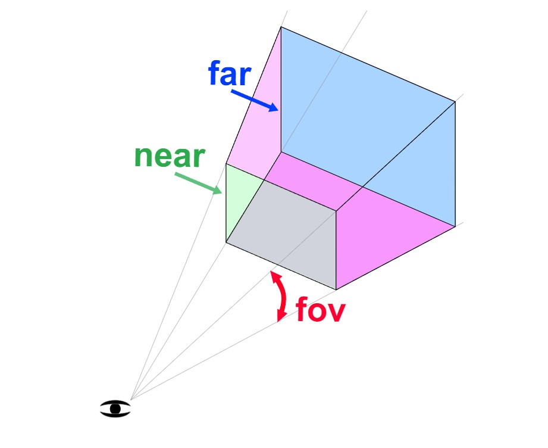При нея near показва на какво разстояние от нас започва видимата част от сцената, far показва къде приключва, fov (field of view) изчислява височината на предната и задната видима част спрямо подадения параметър, а aspect дефинира широчината на предната и задната част.
Създаването е по следния начин:
const camera = new THREE.PerspectiveCamera(fov, aspect, near, far);
Чрез camera.position.set(x,y,z) добавяме позицията на камерата, а чрез camera.lookAt() определяме
точката, към която гледаме.
Код 1 - Нашата първа сцена
Нека видим получения резултат.
Фиг. 2 - Куб
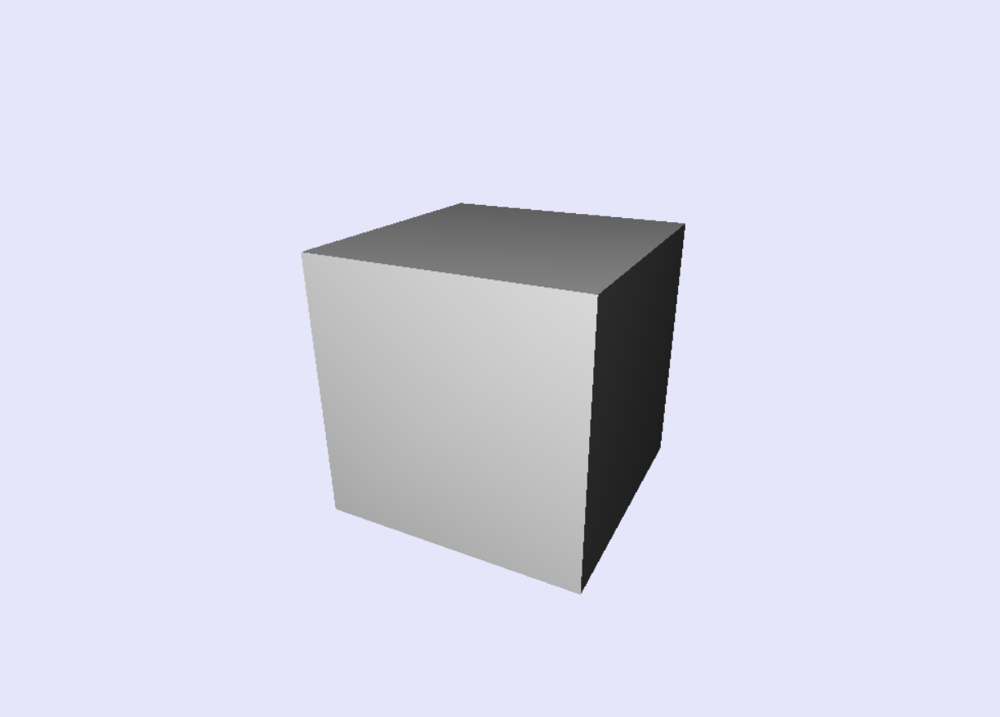2. Геометрии
Всеки обект, който създаваме, трябва да има зададена геометрия. Тя може да е двуизмерна или триизмерна, като имената на геометриите имат формата THREE.[Shape]Geometry(). Имаме различни предварително създадени форми, като например BoxGeometry, ConeGeometry, TorusGeometry, CylinderGeometry и т.н., като всяка геометрия изисква различни подадени аргументи за създаването ѝ.
Нека разгледаме за пример геометрията на конус. Конструкторът за конус има следните параметри:
ConeGeometry(radius : Float, height : Float, radialSegments : Integer,
heightSegments : Integer, openEnded : Boolean, thetaStart : Float, thetaLength : Float)
[3]
.
Код 2 - Цял конус
Фиг. 3 - Цял конус
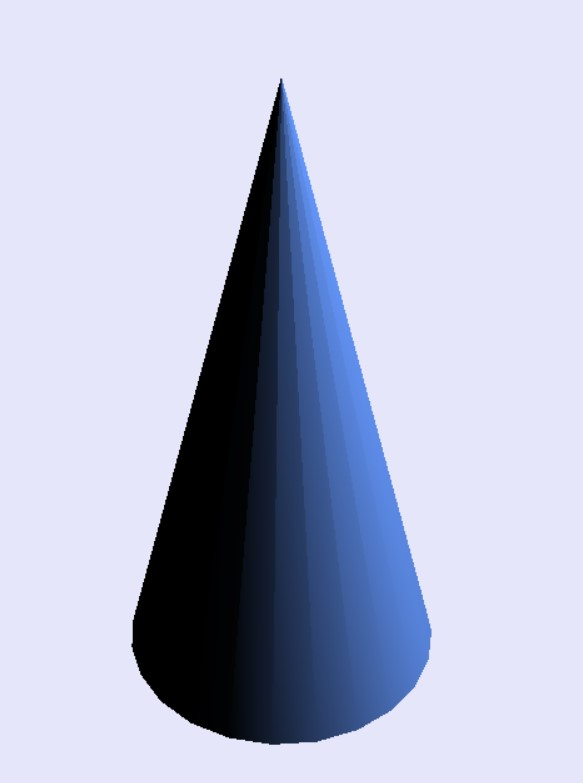Чрез манипулирането на отделните атрибути може да направим конус или пирамида, да направим обекта кух или да начертаем само част от него, сякаш е отрязан по вертикала.
Създаваме пирамида, отрязана по вертикала – за целта добавяме thetaStart – показваща от кой ъгъл на основата започваме да чертаем, както и thetaLength – определящ дължината на нарисуваната част.
Код 3 - Отрязан конус
Фиг. 4 - Отрязан конус
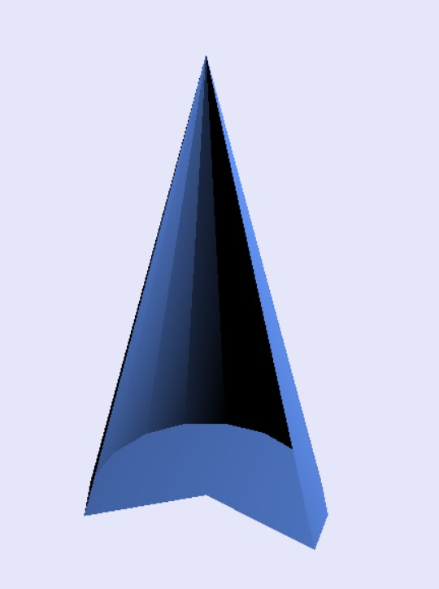3. Материали
Освен геометрия всеки обект има също така и материал. Чрез него задаваме цвета, лъскавината, прозрачността и други интересни характеристики като текстура, дълбочина, видими страни. [4]
Едно от основните свойства на материалите е Side. Чрез него определяме коя страна на рисувания материал да бъде показана - THREE.FrontSide, THREE.BackSide или THREE.DoubleSide тоест и двете страни.
Нека разгледаме пример, в който единствената промяна е стойността на Side. На примера виждаме един и същи отрязан по вертикала конус. Когато зададем FrontSide, вътрешната страна на конуса, която гледа към нас, не се рисува, поради което виждаме един малък отрязък, който всъщност е видимата за камерата външна част на обекта(предната му страна в случая). Когато задаваме BackSide пък виждаме само вътрешната част от конуса, тоест не се вижда отрязъка, който беше изобразен при FrontSide. DoubleSide е най-подходящ в случая, тъй като представя нещата реално и ни показва това, което бихме видяли от конуса в реалния свят.
Нека сега разгледаме някои основни видове материали. За целта ще използваме така наречения „Чайник от Юта“. Той е създаден от Мартин Нюел през 1975 и поради интересната му геометрия, заради която хвърля сянка върху себе си, често се използва за илюстриране на различни материали. Геометрията на чайника може да изтеглите от ТУК
Фиг. 5 - Чайникът от Юта
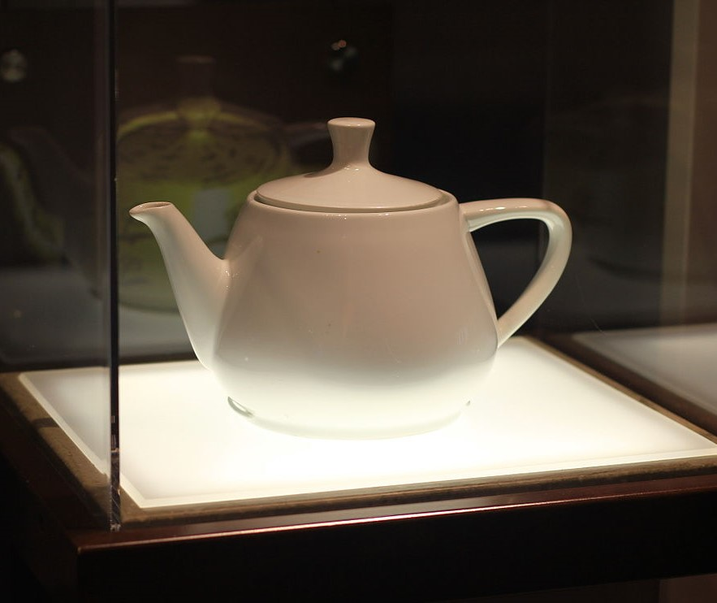Когато създаваме материал, форматът му е MaterialName({parameters}), където {parameters} е опционално, и в него може да добавим различни свойства като например цвят. Цветът се добавя чрез свойството color и трябва да е в шестнайсетичен формат или изписан с малки латински букви (ако има точно наименование).
MeshBasicMaterial()
Това е един от най-простите материали, който е най-малко натоварващ за вашия браузър. Не отчита осветяване, поради което фигурите, създадени с него изглеждат плоски. Това го прави неподходящ в повечето случаи за триизмерни обекти.[5]
Код 4 - Basic Material
Фиг. 6 - "Плосък" чайник
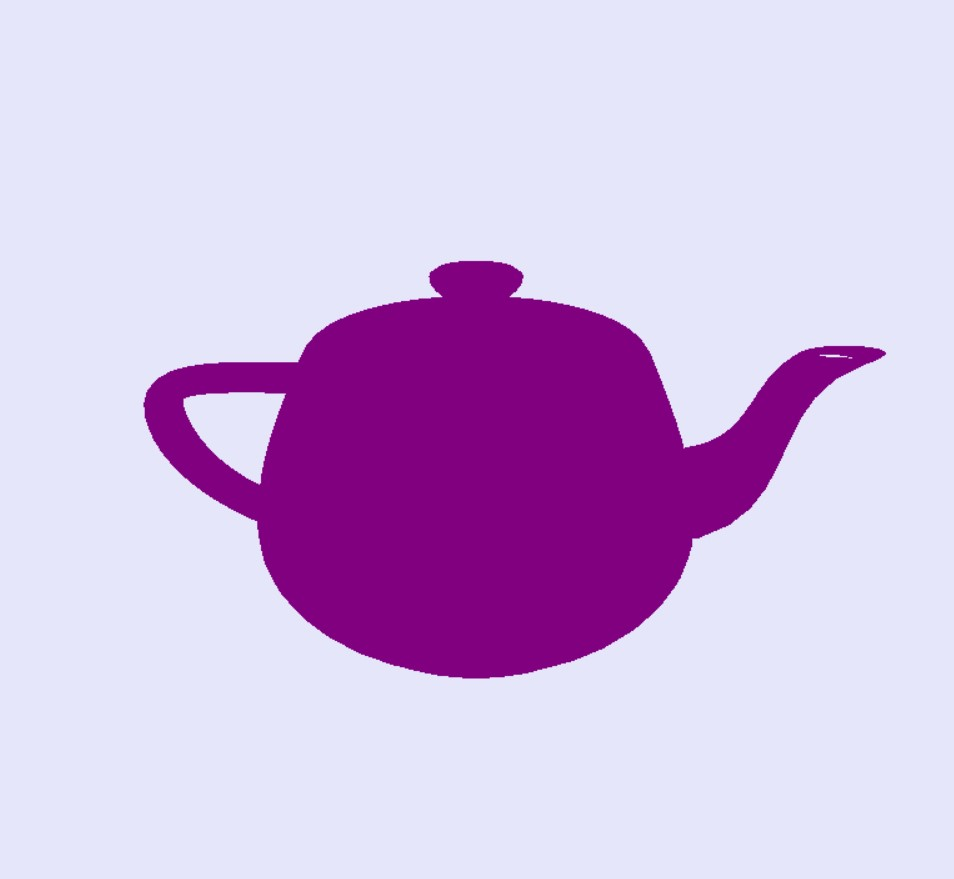MeshLambertMaterial()
Този материал отчита осветяване и засенчване и се използва за обекти без блясък и огледален ефект. Начинът на пресмятане на осветяването е по Ламбертовия модел за изчисляване на отражение, като той е подходящ за имитация на материали като камък, дърво и други матови повърхности. [6]
Код 5 - Lambert Material
Фиг. 7 - Ламбертов чайник 1
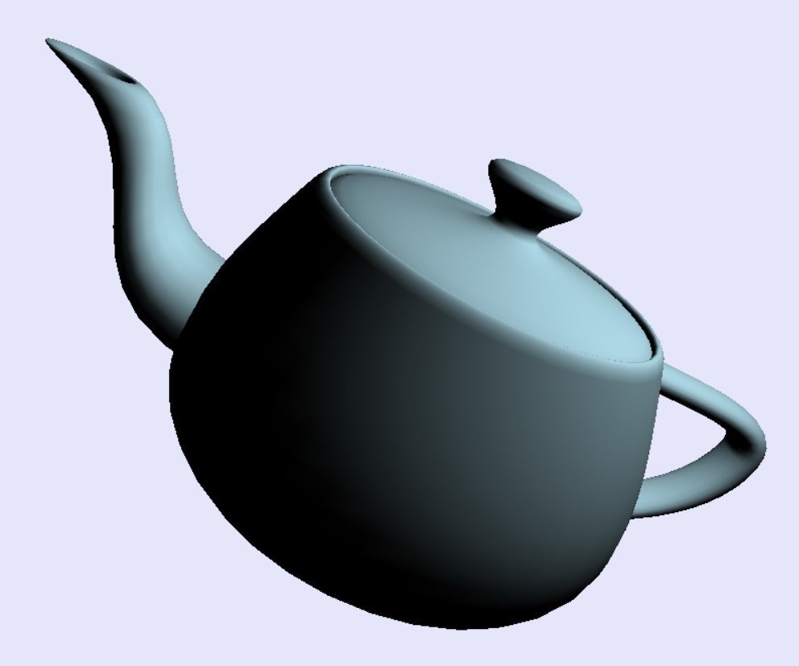Фиг. 8 - Ламбертов чайник 2
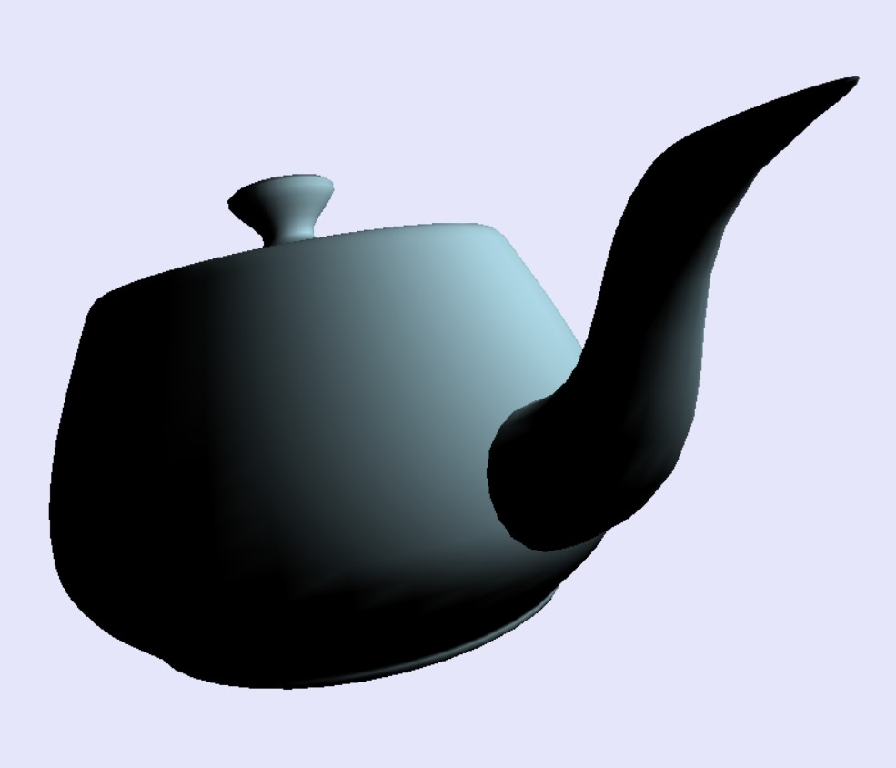MeshPhongMaterial()
Така нареченият Фонгов материал се използва за представяне на по-лъскави и огледални повърхности като метал, полирано дърво, стъкло и други гланцови материи.
Макар материалът да е по-бавен от Ламбертовия, Фонговият се справя по-добре с по-големите стени. При него чрез shininess определяме нивото на лъскавина, като 0 е матов, 50 е леко лъскав и 300 е за много лъскав материал. [7]
Код 6 - Phong Material
Фиг. 9 - Фонгов чайник 1
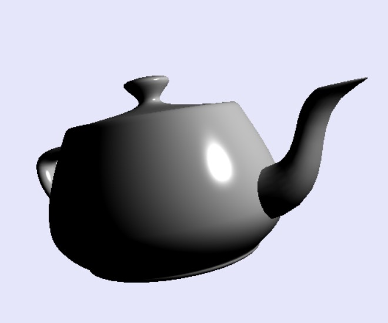Фиг. 10 - Фонгов чайник 2
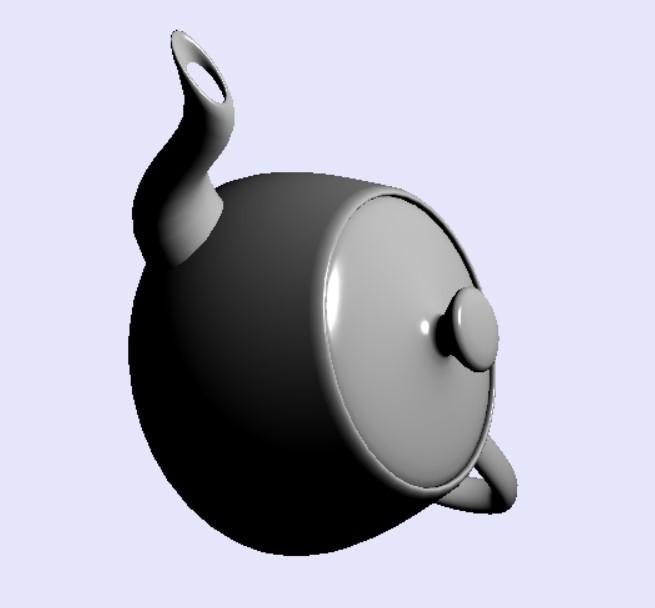Фиг. 11 - Сравнение на материалите
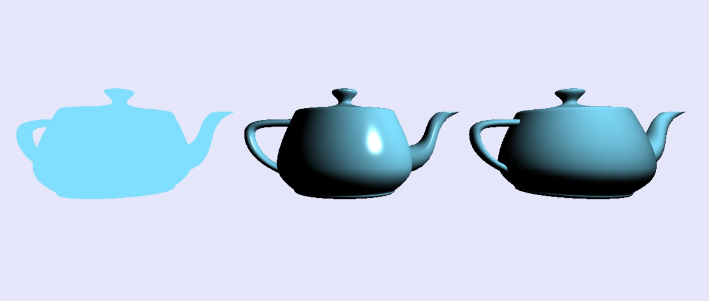4. Анимации
Анимирането на обектите може да се получи по доста различни начини – можем да мащабираме обектите по някоя ос, да преместваме центъра им, да ги завъртаме.
За да създадем анимация трябва да кажем на нашия renderer да създаде цикъл от кадри и да запишем желаните действия във функция по следния начин:
Код 7 - Задаване на анимация
Като за начало ще създадем сфера, която периодично ще преместваме по оста Х.
Код 8 - Движение чрез транслация
Фиг. 12 Промяна на позиция
Друг интересен пример е мащабиране на обект. Ще променяме периодично размера на нашата сфера по осите X и Y. Тъй като cos се мени от -1 до 1, но ние искаме минималната стойност на нашата сфера да е 1, задаваме ограничение размерът да се мени от 1 до 3.
Код 9 - Движение чрез мащабиране
Фиг. 13 Промяна на размера
Освен това можем да анимираме обекти чрез ротация по определена ос (или оси). За примера ще използваме паралелепипед, за да се вижда по-ясно движението. За създаването му ще направим куб със страна 1 и ще мащабираме по отделните оси.
Код 10 - Движение чрез ротация
Фиг. 14 Поклащане и въртене
Ефекти
След като показахме основните елементи, необходими за създаване на триизмерни обекти, нека разгледаме и някои по-специални ефекти.
Tween
Когато искаме да създадем по-интересна и реалистична анимация на помощ идват разнообразни библиотеки, като една от тях е tween. С нея можем да реализираме плавни движения от между крайни точки или по треактория, като същевременно можем да добавяме интересни свойства като еластичност, забавяне, плавност, фиксиран брой повторения и т.н. Изтеглете tween.js
В първия ни пример ще покажем движение на обект между два пилона, с ефект на еластичност при "приемане" на топката от даден пилон. Идеята е, че добавяме два обекта от тип Tween и им казваме от коя до коя точка искаме да има движение, колко време да има след приключване на движението и какъв ефект искаме да добавим.
Код 11 - Движение с TWEEN.Easing.Elastic.Out
Фиг. 15 - Еластичност в края на движение
Имаме различни плавности на движенията, които може да симулираме с tween. Може да има по-бързо движение в началото и в края, а по средата да е забавено или пък обратното. Може да се забързва и после забавя и още много различни опции, които са представени на следващото изображение.
Фиг. 16 Плавност на движенията [8]
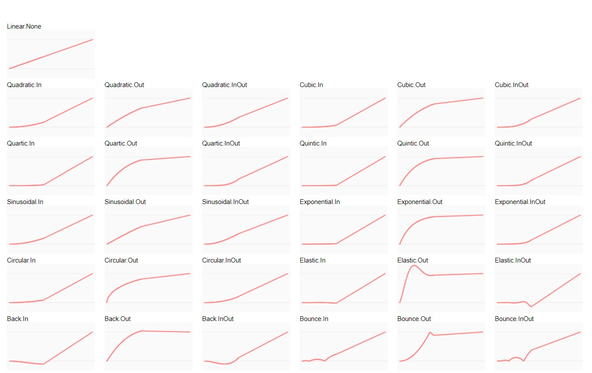Моделиране на физични явления в уеб
Когато работим с триизмерни обекти често може да поискаме една по-реалистична анимация. За да постигнем това, то движението на нашите обекти трябва да отговаря на физичните правила. Има доста библиотеки, чрез които можем да моделираме основните физични явления – инерция, гравитация, триене, загуба на енергия и т.н.
Един често използван и доста интутивен инструмент е Phisijs. Phisijs е плъгин, изграден предимно върху библиотеката ammo.js, който изпълнява физични симулации в отделна нишка на процесора чрез web worker, като по този начин не пречи на производителността на приложението Ви и не отнема от времето за 3D изобразяване (rendering). Плъгинът е направен така, че стилът на писане на кода да е почти напълно идентичен с този на three.js, за да е максимално интуитивна работата с него (основната разлика е промяната на позицията на обекта). Изтеглете phisijs
Чрез Phisijs можем да имитираме различни физични явления – можем да добавим гравитация към определена точка (за илюстриране на орбита на планети и техните спътници например), можем да подобрим „плоски“ движения (ако имаме падащ обект, можем да му добавим ъгъл на завъртане и така да се търкаля, когато падне), можем да добавяме ограничения на движенията без да се налага да пишем сложни функции за преизчисляване на позициите на обектите. [9]
Много важно нещо при използване на Phisijs е, че трябва файловете ни да се стартират през http или https протокол поради защита на браузерите. Има няколко начина да се направи това - да се пускат онлайн или през локален сървър като mongoose или quickphp.
Има 5 основни стъпки, които да помогнат на нашата сцена да „оживее“. [10]
- Добавяме чрез тага <script> нашата библиотека
- Насочваме нашите Physijs.scripts.worker и Physijs.scripts.ammo параметри да сочат към нашия web worker и ammo.js скрипт.
- Заменяме THEE.Scene обекта с Physijs.Scene
- Вместо THREE.Mesh използваме Physijs Mesh, съответстващ с геометрията на нашия обект (Physijs.BoxMesh, Physijs.SphereMesh и т.н.)
- Извикваме scene.simulate метода когато рендираме
Код 12 - Създаване на сцена с Phisijs
Вече видяхме основния принцип за създаване на физически коректен модел. Нека разгледаме и малко интересни примери.
Фиг. 20 - Зарчета
Фиг. 21 Падащи топки
Други 3D библиотеки
Разбира се, освен three.js още много добри библиотеки за създаване на 3D графика в Web. Сега ще споменем някои от тях.
Babylon.js
Babylon.js е още една доста мощна библиотека, базирана на WebGL, която се използва с JavaScript. Често се използва от уеб девелъпъри, които искат да създават уеб базирани игри. Библиотеката може да се използва за анимация, може да се вкарва аудио и дори да се създава виртуална реалност.
След създаването на библиотеката през 2013 година намира приложение в много сфери:[11]
- blockcain светове
- в криминалистиката - за визуализиране на сцени от престъпления
- обучение в сферата на медицината
- моделиране на исторически обекти
- аватари
- военно обучение
Source кодът на библиотеката е написан на TypeScript и компилиран в JavaScript версия. Когато се пишат проектите на JS те се интерпретират от всички уеб браузъри, които поддържат HTML5 и WebGL.
Cannon.js
Cannon.js е една малко по-различна библиотека. Не отговаря точно на определените концепции за 3D библиотеки, а вместо това се използва повече като JavaScript-базирана physics engine за игри. Библиотеката е предназначена да зарежда бързо елементите на страницата и е поддържана от повечето браузури. Освен това работи добре с Canvas елементи и различни WebGL приложения.
Cannon.js се смята за една по-компактна, по-разбираема и по-мощна в своето изпълнение спрямо други "физически" библиотеки като Ammo.js. С нея могат да се правят форми като сфера, равнина, изпъкнал полиедър, частица (particle), куб, цилиндър, heightfield (изображение, което се използва за добавяне на релеф на обект спрямо цвета на отделните пиксели). Cannon.js може да се използва заедно с Three.js и Babylon.js и освен това може да се използва за синхронизация на мрежова физика за мултиплейър онлайн игри, използвайки Lance.gg. [12]
PlayCanvas
Това е библиотека, посветена специално на създаването на игри. PlayCanvas е 3D engine, подкрепен от собствена облачна платформа за разработка, която позволява на екипоте за уеб разработчици да редактират даден проект от множество компютри в реално време. Библиотеката се използва за създаване на 3D обекти, анимиране, физически симулации на твърди тела, добавяне на звуци.
Други интересни библиотеки са: [13]
- Ammo.js
- D3
- Aframe
- Zdog
- LightGL.js
- Phoria.js
- Cesium
- Scene
- Xeogl
- ClayGl
CSS и 3D графиката
Използването на 3D графиката в мрежата съществува от години, като използваните инструменти WebGL, WebVR, three.js ни дават много възможности за реализация на разнообразни среди и обекти. Понякога обаче имаме нужда от по-бърза и лека трансформация и тези инструменти се оказват излишно сложни за нас. В такива случаи на помощ идва CSS. Чрез него можем да подобрим дизайна на уеб приложенията си като им добавим още едно измерение и създадем за някои обекти триизмерен ефект.
Перспективата е първото необходимо нещо за активиране на триизмерно пространство, като тя се добавя чрез свойството transform и функцията perspective (). Стойността, която подаваме на функцията perspective задава колко да е силен 3D ефектът, като може да се приема и като разстояние между нашата гледна точка и наблюдавания обект. [14]
Код 13 - Добавяне на ротация
Фиг. 22 - Завъртян панел
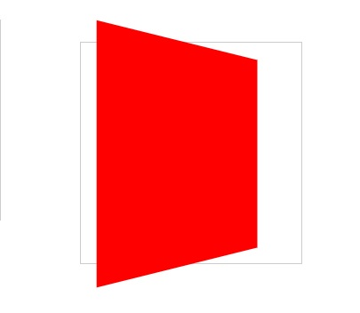Какво се случва обаче, когато опитаме да го приложим на повече елементи? Нека погледнем примера
Код 14 - Ротация на няколко елемента
Фиг. 23 - Разместени панели
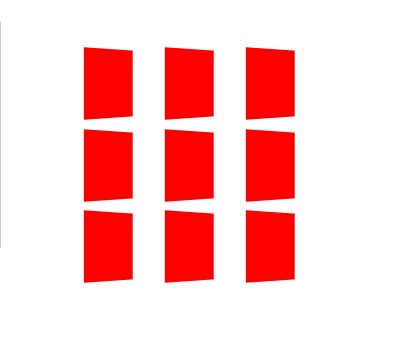Това, което виждаме, е че ефектът се чупи, тъй като всеки елемент има собствана перспектива и „точка на изчезване“. Можем да оправим проблема като зададем perspective на общият родителски елемент, който в случая е сцената, за да се намират поделементите в еднакво пространство.
Код 15 - Поправена перспектива
Фиг. 24 Правилно завъртяни панели
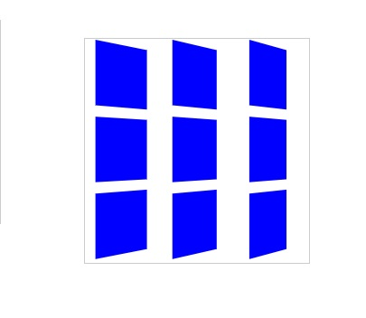
При CSS функциите за трансформиране на триизмерни обекти са доста подобни на тези, за работа с
двуизмерни.
Можем да завъртаме обект по определена ос чрез функциите:
rotateX( angle ),
rotateY( angle ), rotateZ( angle ).
Да ги разтягаме : scaleХ( size ), scaleY( size ), scaleZ( size )
Да ги местим по една или няколко оси :
translateZ(tr),translateX(tr),translateY(tr).
Освен поотделно, можем да задаваме трансформациите по всички оси едновременно
translate3d( tx, ty, tz )
scale3d( sx, sy, sz )
rotate3d( rx, ry, rz, angle )
Финални думи
Създаването на 3D графика в уеб е изключително интересна и приятна задача. Разбира се, зависи от това как ще подходим към нея. Представените тук начини за създаване и анимиране на триизмерни обекти са подходящи за начинаещи – малко познания по css, js, html са достатъчни да започнете с 3D графиката.